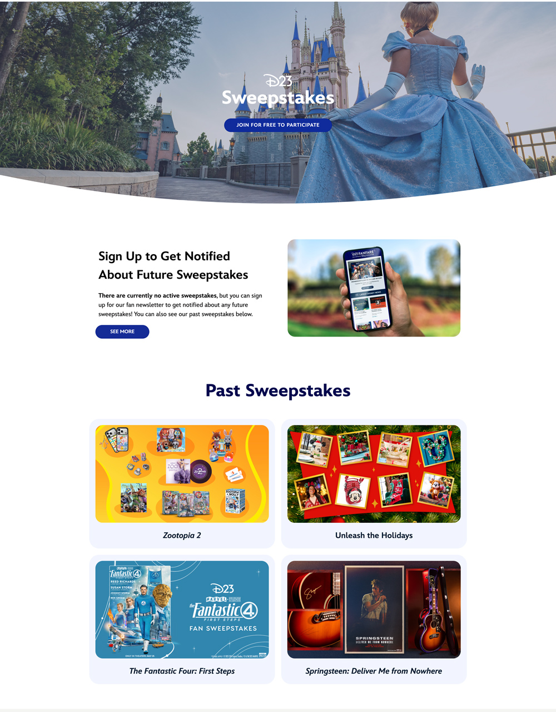
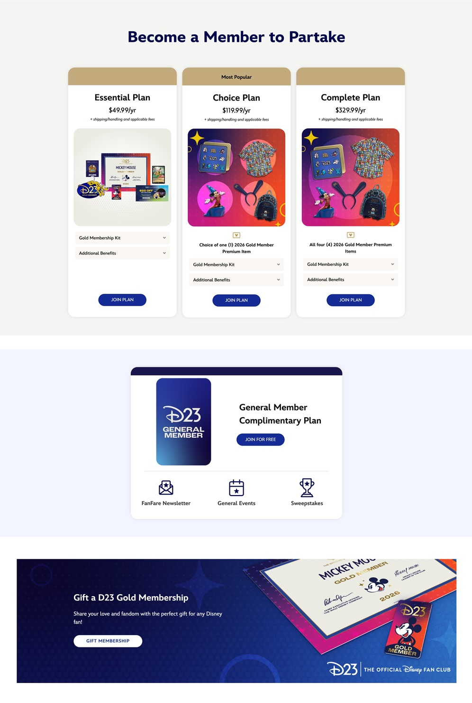

Disney Sweepstakes Page
A Case Study
PROJECT OVERVIEW
BACKGROUND
What is the Disney Sweepstakes Page? D23 runs an exclusive sweepstakes every month to promote new Disney studio releases or other events. This is a recurring membership benefit and serves as a marketing promotion.
THE CHALLENGE
Previously, every sweepstakes D23 ran got its own one-off page built from scratch. Building a dedicated page for each sweepstakes was slow and unsustainable. Each one required new design and production work, even though the core experience was the same every time.
MY ROLE
I was tasked with creating an evergreen Sweepstakes Landing Page that acted as a flexible template that could be easily adapted to every sweepstakes that ran. The timeline for this project was tight, so I designed and built the page directly on Wordpress, iterating directly on the page after getting feedback from senior leadership.
KEY DECISIONS
Two-state template: The page was built around two states: an active state showing the current sweepstakes' prize details and imagery, and an empty state with a clear call to action to join the membership so users don't miss the next one. This meant the page would always be live, whether or not a sweepstakes was currently running.
Past sweepstakes section: Even in the empty state, a section showcasing past sweepstakes keeps the page valuable. Fans can see real prizes that have been won before, which builds the same kind of FOMO that drove the Join Page redesign. A call to action further pushes fans to join the membership or sign up for our mailing list so they don't miss the next sweepstakes.
Swappable, templated content: Headers, imagery, and prize copy were built to be easily swappable per sweepstakes, so a new promotion could go live by updating components rather than rebuilding the page.
Design reuse under a time crunch: Because of a tight launch timeline, this page intentionally reused visual patterns and components from the Join Page redesign rather than designing and iterating from scratch. This was a deliberate decision to create design consistency between the two pages and launch on-time under pressure.
Final Page Design - Empty State (No Current Sweepstakes Live)


Below is what the top section looks like during an active state

LEARNINGS
This project reinforced how a templated, dynamic digital production system can save significant time for technical workflows. It required me to find a creative solution to make an empty state just as valuable as an active one by using calls to action and imagery to drive conversion. Working under a tight deadline gave me the chance to get more hands-on experience with CMS publishing.